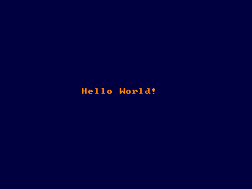

Color

Définit la couleur d'affichage de premier-plan
/ d'arrière-plan qui est utilisée en sortie console ou graphique pour
le texte.
Color [foreground] [, background]
result = Color [( [foreground] [, background] )]
foreground
Renvoie un Entier 32 bits contenant la couleur courante de premier-plan dans le Mot de Poids Faible et la couleur courante d'arrière-plan dans le Mot de Poids Fort. Les valeurs des couleurs anciennes peuvent être extraites en même temps que la création de nouvelles.
Color définit les couleurs courantes de premier-plan et/ou d'arrière-plan. Circle, Draw, Line (Graphics), Cls, Paint, Print, PReset et PSet utilisent tous,quand vous ne leur spécifiez pas de couleur particulière, les dernières couleurs positionnées par cette fonction. Les couleurs acceptées par Color dépendent du mode graphique courant.
Si vous utilisez une profondeur de couleur supérieure à 8bpp (bit par pixel), premier-plan et arrière-plan ont directement des valeurs de couleur RGB de la forme &hAARRVVBB, où AA, RR, VV et BB sont les composantes alpha, rouge, vert et bleu ayant des valeurs de &h00 à &hFF (0-255 en notation décimale). Tandis qu'en modes "hi / true color", vous pouvez utiliser les macros RGB ou RGBA pour obtenir une valeur de couleur valide.
Une Palette par Défaut est automatiquement attribuée quand vous entrez un Screen mode.
Syntaxe
Usage
Color [foreground] [, background]
result = Color [( [foreground] [, background] )]
Paramètres
foreground
choix de la couleur de premier-plan
backgroundchoix de la couleur d'arrière-plan
Valeur renvoyée
Renvoie un Entier 32 bits contenant la couleur courante de premier-plan dans le Mot de Poids Faible et la couleur courante d'arrière-plan dans le Mot de Poids Fort. Les valeurs des couleurs anciennes peuvent être extraites en même temps que la création de nouvelles.
Description
Color définit les couleurs courantes de premier-plan et/ou d'arrière-plan. Circle, Draw, Line (Graphics), Cls, Paint, Print, PReset et PSet utilisent tous,quand vous ne leur spécifiez pas de couleur particulière, les dernières couleurs positionnées par cette fonction. Les couleurs acceptées par Color dépendent du mode graphique courant.
| Mode | Signification |
| 1 | foreground est la couleur d'écran (de 0 è 15). background modulo 4 est la palette CGA émulée à utiliser: 0 (vert, rouge, et marron), 1 (cyan, magenta et blanc), 2 (comme 0, mais avec des couleurs vives) ou 3 (comme 1, mais avec des couleurs vives) |
| 2, 11 | foreground est un indice de couleur dans la palette courante (de 0 à 1). background est un indice de couleur dans la palette courante (de 0 à 1). |
| 7, 8 | foreground est un indice de couleur dans la palette courante (de 0 à 15). background est un indice de couleur dans la palette courante (de 0 à 15). |
| 9 | foreground est un indice de couleur dans la palette courante (de 0 à 63). background est un indice de couleur écran dans la palette courante (de 0 à 63). |
| 12 | foreground est un indice de couleur dans la palette courante (de 0 à 15). background est un indice de couleur dans la palette courante (de 0 à 15). |
| 13 et plus | foreground est un indice de couleur dans la palette courante (de 0 à 255). background est un indice de couleur dans la palette courante (de 0 à 255). |
Si vous utilisez une profondeur de couleur supérieure à 8bpp (bit par pixel), premier-plan et arrière-plan ont directement des valeurs de couleur RGB de la forme &hAARRVVBB, où AA, RR, VV et BB sont les composantes alpha, rouge, vert et bleu ayant des valeurs de &h00 à &hFF (0-255 en notation décimale). Tandis qu'en modes "hi / true color", vous pouvez utiliser les macros RGB ou RGBA pour obtenir une valeur de couleur valide.
Une Palette par Défaut est automatiquement attribuée quand vous entrez un Screen mode.
Exemple
' Valide 320x240 en 32bpp profondeur couleur
Screen 14, 32
' Valide couleurs premier-plan orange et arriere-plan bleu fonce
Color RGB(255, 128, 0), RGB(0, 0, 64)
' Efface ecran avec couleur arriere-plan
Cls
' Affiche "Hello World!" au milieu de l'ecran
Locate 15, 14
Print "Hello World!"
Sleep
Screen 14, 32
' Valide couleurs premier-plan orange et arriere-plan bleu fonce
Color RGB(255, 128, 0), RGB(0, 0, 64)
' Efface ecran avec couleur arriere-plan
Cls
' Affiche "Hello World!" au milieu de l'ecran
Locate 15, 14
Print "Hello World!"
Sleep

Dim c As UInteger
'Recupere valeurs couleur courante
c = Color()
'Extraie valeur couleur dans c utilisant LOWORD et HIWORD
Print "Console colors:"
Print "Foreground: " & LoWord(c)
Print "Background: " & HiWord(c)
'Recupere valeurs couleur courante
c = Color()
'Extraie valeur couleur dans c utilisant LOWORD et HIWORD
Print "Console colors:"
Print "Foreground: " & LoWord(c)
Print "Background: " & HiWord(c)
Différences avec QB
- Les modes de couleur Direct ne sont pas supportés dans QB.
- Il n'y a pas d'argument bordure.
Voir aussi